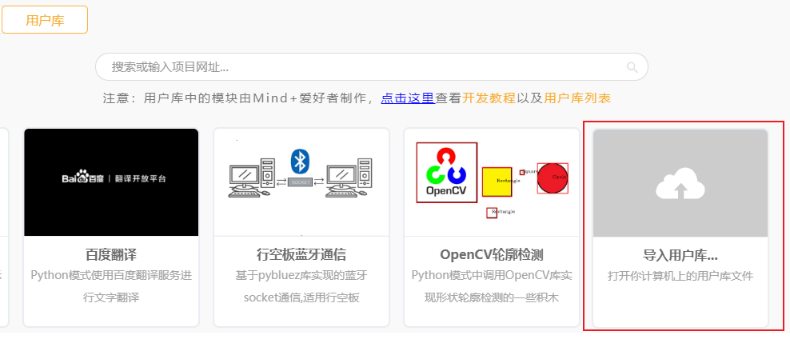
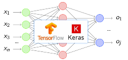
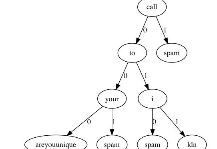
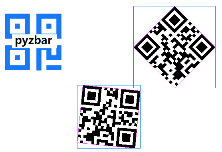
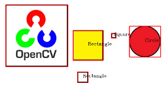
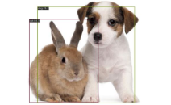
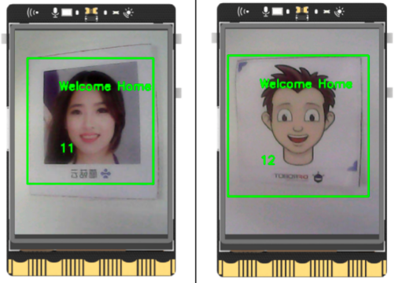

Mind+图形化用户库收集
此处收集专为行空板制作的非硬件类Mind+图形化用户库，硬件模块的扩展库可以在相应硬件wiki中查看。
加载库的方法
-
通过链接直接加载(推荐)：
Mind+(1.7.3及以上版本)切换到Python模式，打开扩展，切换到用户库标签，粘贴扩展库的链接回车即可通过网络加载库。
-
离线本地加载：
将扩展库的链接粘贴到浏览器地址栏打开，下载仓库中.mpext后缀的库文件到电脑(注意有的平台需要登陆或网速较慢)，Mind+(1.7.3及以上版本)切换到Python模式，打开扩展，切换到用户库标签，点击导入用户库，选择下载的.mpext库文件即可通过本地加载。

库列表
| 加载图 | ||||
|---|---|---|---|---|
| 库名称 | base64 | OpenAI | Pandas | Sklearn |
| 库链接 | https://gitee.com/chenqi1233/ext-base64 | https://gitee.com/chenqi1233/ext-OpenAI | https://gitee.com/chenqi1233/ext-pandas | https://gitee.com/chenqi1233/ext-sklearn |
| 描述 | 可以将图片转换为base64编码，方便配合可视化界面网络图片组件的使用。 | 调用OpenAI的网络接口实现chatGPT聊天效果 | Pandas 是 Python 语言的一个扩展程序库，用于数据分析。 | 包含多种算法的人工智能库 |
| 加载图 |  |
|||
| 库名称 | 行空板蓝牙Socket通信 | 邮件发送 | 百度翻译 | 行空板机器学习物体分类 |
| 库链接 | https://gitee.com/liliang9693/ext-bluetoothSocket | https://gitee.com/liliang9693/ext-pyemail | https://gitee.com/liliang9693/ext-baidufanyi | https://gitee.com/liliang9693/ext-kerasMLOC |
| 描述 | 使用蓝牙功能实现两块行空板通讯的功能 | 通过网络发送邮件功能 | 通过百度翻译提供的网络接口实现文字翻译 | 通过keras框架实现物体分类功能 |
| 加载图 |  |
 |
||
| 库名称 | 朴素贝叶斯分类器 | Flask网页服务器 | pyzbar二维码解码库 | 讯飞语音 |
| 库链接 | https://gitee.com/liliang9693/ext-pyGaussianNB | https://gitee.com/liliang9693/ext-pyFlaskWeb | https://gitee.com/liliang9693/ext-qrcode_decode | https://gitee.com/liliang9693/ext-xunfeiyuyin |
| 描述 | 实现朴素贝叶斯分类器的积木 | 用dominate库生成简单网页，用Flask库将网页加载到服务器上显示 | 使用pyzbar库实现二维码解码 | 通过讯飞开放平台提供的网络接口实现语音识别功能 |
| 加载图 |  |
|||
| 库名称 | OpenCV轮廓检测 | matplotlib图表 | pyttsx3 | 车牌识别 |
| 库链接 | https://gitee.com/liliang9693/ext-cvFindContoursEasy | https://gitee.com/chenqi1233/ext-matplotlib | https://gitee.com/chenqi1233/ext-pyttsx3 | https://gitee.com/chenqi1233/ext-chinese_license_plate_detection_recognition |
| 描述 | 通过opecv识别物体轮廓实现形状检测和标识 | matplotlib图表库可以实现多种样式的图表显示，包括折线图饼图散点图等 | 不依赖网络将文字合成语音的库 | 不依赖网络，本地识别中国车牌的库 |
| 加载图 |  |
 |
||
| 库名称 | BaseDeploy | ChatGLM | Face Recognition人脸识别 | |
| 库链接 | https://gitee.com/liliang9693/ext-BaseDeploy | https://gitee.com/chenqi1233/ext-chatglm | https://gitee.com/chenqi1233/ext-face_recognition | |
| 描述 | BaseDeploy通过传入ONNX模型的路径加载为一个模型，通过model.inference即可完成模型的推理，从而可实现借助BaseDeploy完成模型部署。 | ChatGLM是清华技术成果转化的公司智谱AI研发的支持中英双语的对话机器人。ChatGLM基于GLM130B千亿基础模型训练，它具备多领域知识、代码能力、常识推理及运用能力；支持与用户通过自然语言对话进行交互，处理多种自然语言任务。比如：对话聊天、智能问答、创作文章、创作剧本、事件抽取、生成代码等等。 | 使用OpenCV库级联分类器实现摄像头采集人脸照片，训练模型，识别人脸功能，仅适用于行空板。适用于【行空板Python入门教程】 第十三课、人脸识别之智能门禁 | |
自制用户库
Mind+扩展库可以根据需要自行定制开发，点击查看详细开发教程。